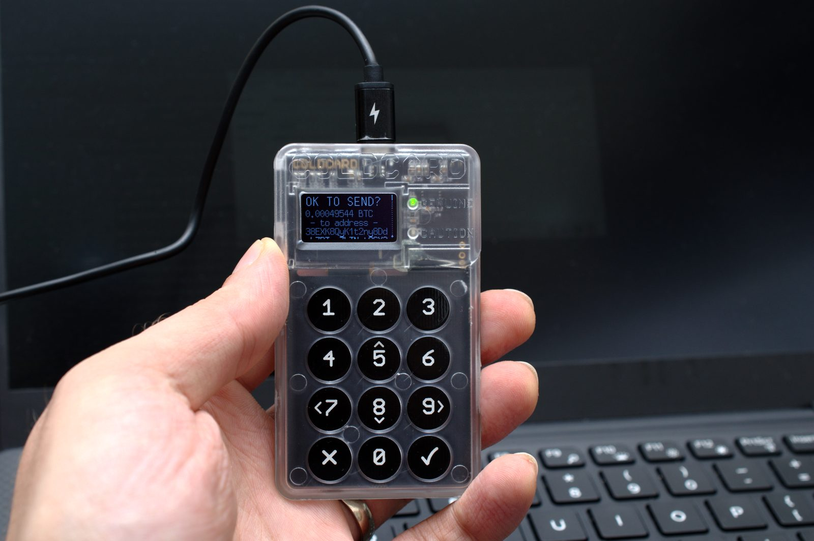
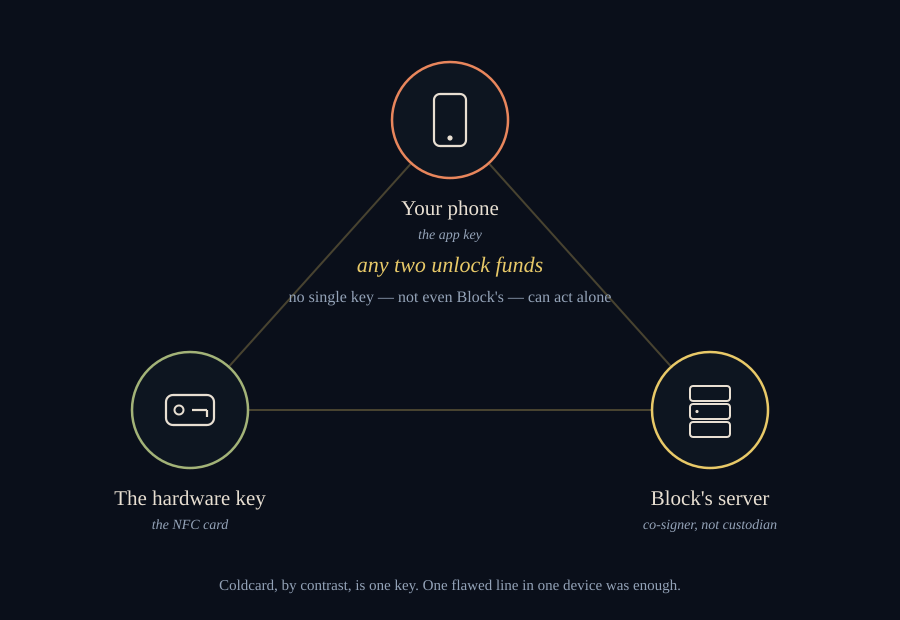

A Twenty-Five-Minute Window, and Why I Split the Key
AUGUST 4, 2026
Twenty-five minutes. That is roughly how long it took this week between a hardware wallet company called Coinkite disclosing a bug in their Coldcard device and someone taking a wallet's worth of bitcoin nobody was watching closely enough. By the time I sat down to write this, the total stolen had climbed from thirty-eight million dollars to somewhere north of a hundred and thirty million, spread across at least fifteen separate groups working the same hole independently — and it was still climbing while I checked my sources a second time. Numbers this fresh don't hold still. Take the figure above as true on the day I wrote it and nothing more; if you're reading this later, it was almost certainly higher by then.
Forty Bits

Here is the plain version of what actually happened, because the plain version is worse than the headline. A Coldcard is supposed to generate the twelve or twenty-four word recovery phrase behind everything it holds using a dedicated hardware chip built to produce real randomness — not the kind a computer fakes by checking a clock, but the kind a physicist would sign off on. A firmware rewrite in March of 2021 introduced a bug in the single line of code responsible for confirming that chip was actually being used. The check tested whether a setting existed, not what it was set to — so it always passed, and seed generation quietly fell back to software pseudo-randomness, seeded from the device's own non-secret serial number and its internal clock. A twelve-word phrase that should carry roughly a hundred and twenty-eight bits of real entropy was, on the affected models, carrying somewhere between forty and seventy-two, according to Coinkite's own advisory. That is not "weaker." That is a lock a sufficiently patient stranger can eventually pick, and several strangers picked a great many of them within the same half hour.

The Easy Story, and a Better One
The easy version of this story is that somebody was lazy and it cost people fortunes. Having gone and read what actually happened, I don't think that's quite right — and the harder version turns out to be more interesting anyway. A check that tests whether a flag exists instead of what it's set to is a genuinely common, genuinely boring class of software mistake. It isn't proof nobody tried. What I find more persuasive is a different, better-sourced argument — made loudest, admittedly, by a rival wallet maker with an obvious stake in making it: Coldcard's firmware was fully open source until 2020, when — not long after a competitor built a product partly on Coldcard's own published code — Coinkite moved to a more restrictive license, one that lets anyone read the code but not freely fork or resell it. That may well have quietly thinned out the population of unpaid strangers who used to comb through exactly that codebase for exactly this kind of mistake. See one detailed writeup making that case, with the caveat that its loudest advocate runs a competing wallet company. I can't prove the license change is why the bug survived five years — nobody's proven that, and Coinkite hasn't addressed the argument directly that I could find. But "we made it harder for outside eyes to check our work, and outside eyes didn't catch the thing that mattered most" is a fair sentence to write down, even without a smoking gun.
To Coinkite's credit, once they knew, they moved fast — patched firmware for every model line within about a day. Their founder told users, in plain terms: if you ever generated a seed on a Coldcard, that patch alone does not save you. Move the funds now, onto a freshly generated seed, on the updated firmware. What a firmware update can't do is un-happen a seed that was already generated weak. It's the difference between fixing a broken lock and telling everyone who already owns the old one that a copy of their key has been quietly circulating for five years.
Why I Split the Key
I own a first-generation Bitkey — the hardware key Jack Dorsey's company, Block, started shipping in 2024. It looks like a stainless steel credit card and talks to your phone over NFC. It does not hold everything I own, and it was never meant to. That's not because I distrust Coldcard specifically, or think nobody should ever keep a seed phrase in one well-guarded place — plenty of careful people do exactly that, safely, for years. It's that any single device, however well built, is a single point of failure by design. The Coldcard story is what that failure mode looks like when it actually goes wrong: one flawed line, invisible to every owner, silently downgrading every seed it ever produced, for five years, with no way for an individual user to have caught it themselves.
Bitkey works differently, and it's worth explaining properly, because most of what gets said about it online is either marketing or a dismissal and rarely the actual mechanics. It's a two-of-three arrangement. There are three keys: one lives on your phone, one lives on the physical hardware key, and one lives on Block's own servers. Any two of the three can move funds. No single key can — not the phone, not the hardware key, and, deliberately, not Block's own server key either. Lose the hardware key and the phone plus the server key still recover you. Lose the phone and the hardware key plus the server key still recover you. If Block's servers vanished tomorrow, the hardware key and the phone together are still enough on their own. The company that built it is a co-signer in the arrangement, not a custodian of it.

The Feature Almost Nobody Mentions
The part of Bitkey I think is genuinely underrated is inheritance, and it's the reason I'd point a curious reader toward reading further before writing the whole thing off as a gadget. You name a beneficiary directly in the app — they need their own Bitkey, and that's the real requirement. Until they ever try to claim anything, they can see nothing: not the balance, not the history, not even that they've been named at all. If a beneficiary does start a claim someday, a six-month clock begins, and the entire time, the original owner keeps getting notified and can cancel it outright — which covers both a beneficiary jumping the gun in bad faith and an honest mistake. Only once six months pass with nobody stopping it does access actually transfer. The mechanics are laid out in Block's own technical writeup if you want the cryptography underneath it. It's a quieter, more thought-through answer to the oldest problem in self-custody — the fortune that dies with the one person who memorized the seed phrase — than most of what gets built for it.
What Bitkey Doesn't Get You
None of this makes Bitkey the obviously correct answer, and I don't want to write it as if it does — that isn't really the point of keeping a notebook. Bitkey's own code isn't fully open source either; it ships under the same kind of restrictive, look-but-don't-fork license Coldcard itself adopted in 2020, the very shift I was skeptical of two sections ago. A hardware-wallet verification project called WalletScrutiny, whose entire purpose is checking whether a wallet's published code actually matches what's running on the physical device, rates the newest Bitkey "nosource" overall — not because the code is hidden, but because part of it leans on a closed, third-party fingerprint-sensor library that nobody outside the company can independently verify. I couldn't find a named, public third-party security audit of Bitkey from a firm like the ones Coldcard and its peers have had. And Bitkey is younger — it shipped in 2024, against Coldcard's much longer run — which means "no major incident yet" is a weaker claim than it sounds like it should be. Shorter track record, smaller install base. I'm not going to pretend those aren't real gaps, and I'd rather say so plainly than let the rest of this entry read like an ad.
The Billion-and-a-Half-Dollar Counterargument
The honest counterpoint to my own argument — and the reason I think it still holds up regardless — is a different hack entirely. In February of 2025, an exchange called Bybit lost roughly a billion and a half dollars out of a cold wallet that was itself a multisig, signed by several real people using a well-regarded tool. The attackers didn't need to break the multisig math at all. They compromised the interface the signers were looking at, so the transaction on screen wasn't the transaction they actually signed. Two-of-three, three-of-five — none of it matters if you can't trust what's in front of you the moment you press approve. Which is exactly why the biggest, fairest criticism of the first-generation Bitkey — no screen, nothing on the device itself to check a transaction against, just trust the phone and hope — bothered me more than the marketing ever let on. It's also exactly what the second-generation device, announced this spring with an actual screen built in, is for: letting you verify what you're actually signing on the one device in the arrangement that isn't also the thing most likely to be compromised.
What stays with me about the whole story isn't the dollar figure, which will be stale by the time anyone reads this. It's the shape of the failure: one preprocessor check, testing the wrong thing, in one file, in one firmware update, five years ago — and every seed generated downstream of it was quietly weaker than its owner had any way to know. That isn't a reason to distrust any one company in particular. It's a reason not to let any single device, however well made, be the only thing standing between you and a mistake nobody's caught yet.
* That link is an Amazon affiliate link — the one in this entry. If you buy through it, I get a small commission at no extra cost to you. I said back in the first entry I ever posted, on my travel blog, that if that ever changed, it would say so plainly where it happened. This is that.